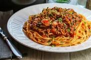

Spaghetti Bolgnese

Here is my recipe for Spaghetti Bolognese. Can't go wrong with spag bol!
Ingredients
- Pasta (500g)
- Cheese
- Chopped Tomatoes
- Tomato Puree
- Onions
- Basil
- Beef Mince 500g
- Garlic
- Oil (2 Tablespoons)
- Salt
Steps
- Chop Onions and Garlic and fry them in a pot.
- Add the mince and cook until done.
- Add the chopped tomatoes and puree and mix it in.
- Boil the pasta
- When finished cooking serve it up!